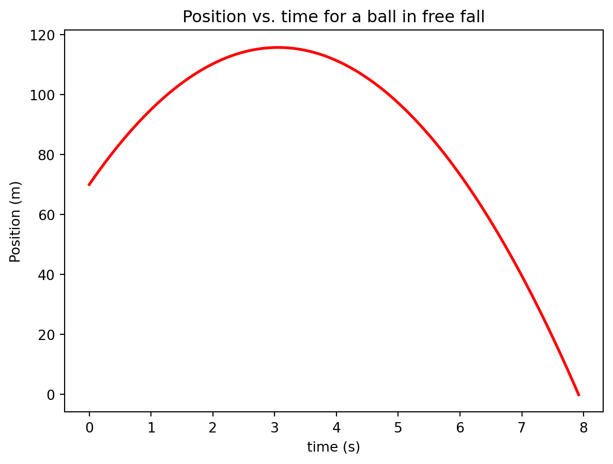
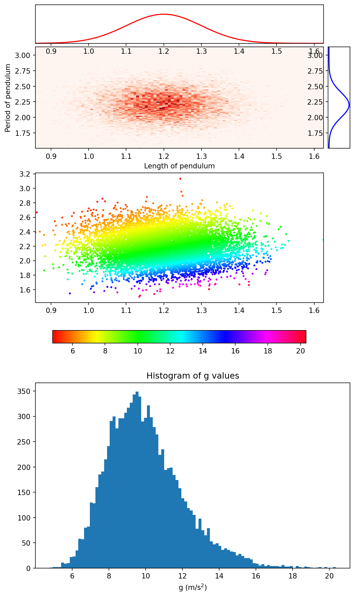

while <stopping condition>
<Body of loop>Lab 9 Euler’s Method with Uncertainty: Weather Balloons
Name:
Skills
In this lab you will gain the following skills
- Learn how to construct a Python
whileloop. - Learn how to generate random numbers from a statistical distribution.
- Learn how to propagate uncertainty in a numerical calculation.
Background Information
Weather Balloons and Buoyant Forces
Last time we learned that the force of air drag is given by:
\[F_D = {1\over 2} \; C \rho A |v| v \;\;\;\;\;(1) \]
and used this together with Euler’s method to predict the fall times for several objects. This week we will study the motion of a weather balloon and predict the time it will take for the weather balloon to rise a chosen distance. This means that we will need to add one more force into the analysis: the buoyant force.
The balloon has a total of three forces acting on it: gravity, air drag, and a buoyant force from the surrounding air. The downward gravitational force has three contributions: the weight of the balloon itself, the weight of the helium gas inside the balloon, and the weight of the payload attached to the balloon.
Let’s first discuss the buoyant force. In principles of physics II you’ll learn that the magnitude of the buoyant force is equal the weight of the displaced fluid, which in this case is just air. The balloon is displacing a volume of air equal to the balloon’s volume.
\[ F_b = m_\text{air} g = \rho_\text{air} V g \]
Where \(\rho_\text{air}\) is the density of the surrounding air and \(V\) is the volume of the balloon. Since the balloon is approximately spherical we’ll use the volume of a sphere:
\[ V = {4\over 3} \pi r^3 = {1\over 6} \pi d^3 \]
The density of a gas varies with temperature and pressure according to the following formula:
\[ \rho(P,T) = \rho_0 {P \over P_0} {T_0 \over T} \]
where \(\rho_0\), \(T_0\) and \(P_0\) are the density, temperature, and pressure at some common point of reference. We’ll use the values corresponding to standard temperature and pressure (STP) given below:
\[ P_0 = 1.0 \times 10^5 \text{ Pa} \]
\[ T_0 = 0^\circ \text{ C} = 273.15 \text{ K} \]
\[ \rho_\text{air,0} = 1.2754 \text{ kg/m}^3 \]
\[ \rho_\text{He,0} = 0.1784 \text{ kg/m}^3 \]
Let’s write down Newton’s second law, including all of these terms and see if we can arrive at an expression for the acceleration of the balloon.
\[ F_b - F_g - F_D = m a \]
\[ {F_b - F_g - F_D\over m} = a \]
where
\[ F_b = \rho_\text{air} V_\text{balloon} g \]
\[ \begin{align*} F_g &= m_\text{payload} g + m_\text{He} g + m_\text{balloon} g\\ &= m_\text{payload} g + \rho_\text{He} V g + m_\text{balloon} g \end{align*} \]
\[ F_D = {1\over 2} \rho_\text{air} A_\text{balloon} C |v| v \]
\[ \rho_\text{air} = \rho_\text{air,0} {P \over P_0} {T_0 \over T} \]
\[ \rho_\text{He} = \rho_\text{He,0} {P \over P_0} {T_0 \over T} \]
While Loops
Last week we used a for loop with Euler’s method, which was a good first choice because its easy to understand. However a for loop is often a clunky approach because we often don’t know how many iterations need to be performed to achieve the desired result. For example, last week we showed an example of Euler’s method for a particle launched straight upward and allowed to travel up and then come back down and hit the ground. Instead of performing a specified number of iterations of this loop, it would be nice to let the loop continue until the particle hit the ground. We can do this with a while loop which has the following basic structure:
The <stopping condition> is a statement that determines whether the loop will continue to run or not. If the statement evaluates to True, the loop continues and if it evaluates to False, it will stop. As a simple example let’s use a while loop find the first 20 numbers in the fibonacci sequence:
previous = 1 # First number in the Fibonacci sequence
current = 1 # Second number in the Fibonacci sequence
n = 2
while n < 20:
nextN = current + previous #Find the next Fibonacci number
previous = current # The current number becomes the previous
current = nextN # The next number becomes the current
n = n + 1 # Keep track of how many numbers we've found
print(nextN)The stopping condition for this loop is n < 20, where n is counting how many numbers in the sequence have been found so far. This variable starts off with a value of \(2\) and increases by \(1\) every time that another number is found. Once the value of n reaches \(20\), the statement n < 20 produces a False and the loop terminates.
while loops should be used with caution because you can easily write a faulty stopping condition and inadvertently write a loop that runs forever. This happens because your stopping condition was never met. For example, if the statement n = n + 1 were omitted in the code above, n would never change and the stopping condition n < 20 would never evaluate to False and the loop will run forever. To avoid this, you should always get in the habit of building a fail safe into your while loops. To build a fail safe, first define a variable that counts the number of loop iterations. Then add an if statement inside the loop body to check to see if the value of the counter variable becomes too large. A break statement is used in this case to exit the loop. Below is an example of the loop above with faulty termination logic but with a fail safe to prevent it from looping forever.
previous = 1 # First number in the Fibonacci sequence
current = 1 # Second number in the Fibonacci sequence
n = 2
counter = 0
while n < 20:
nextN = current + previous #Find the next Fibonacci number
previous = current # The current number becomes the previous
current = nextN # The next number becomes the current
counter += 1 # Keep track of how many numbers we've found
if counter > 1000:
print("Something went wrong")
break
print(nextN)To use a while loop in Euler’s method for a projectile that is going to hit the ground, we should use the stopping condition y[-1] > 0 so that the loop terminates once the position of the projectile becomes negative. The example from last week with the modifications to use a while loop is given below. Notice also that since we no long use the loop variable i, we can’t use it to index the position and velocity lists. Instead we use v[-1] and y[-1] to access the last element in each of these lists.
# Import statements
import numpy as np
import matplotlib.pyplot as plt
v0 = 30.0 # Initial velocity in m/s
y0 = 70 # Initial height in m
delta_t = 0.01 # Time step in seconds (should be small)
t0 = 0 # Start time in seconds
# Make lists to store your positions, velocities and times.
y = [y0]
v = [v0]
t = [t0]
while y[-1] > 0:
a = -9.8 # Calculate the current acceleration
# Store the new position, velocity, and time in the lists
v.append(v[-1] + a * delta_t)
y.append(y[-1] + v[-1] * delta_t)
t.append(t[-1] + delta_t)
plt.plot(t,y,linewidth = 2, color = 'red')
plt.xlabel("time (s)")
plt.ylabel("Position (m)")
plt.title("Position vs. time for a ball in free fall")Text(0.5, 1.0, 'Position vs. time for a ball in free fall')
Propagating Uncertainty - Random numbers
A centeral theme in this class is that of propagating uncertainty. When performing numerical simulations, the uncertainties in the measured quantities used will propagate through to the final result. As a simple example, recall the equation for the acceleration due to gravity (\(g\)) in terms of the lengthe of a pendulum (\(L\)) and its period (\(T\)): \(g = {4 \pi^2 L \over T^2}\). Imagine collecting (L,T) data pairs and wanting to use them to determine the uncertainty on the value of \(g\). This situation is depicted graphically in the figures below.
Text(0.5, 0, 'g (m/s$^2$)')
The top figures represent the distribution of the (L,T) pairs and the one-dimensional projections. The second figure shows the same data as the top figure but now the value of g for each (L,T) data pair is represented by the color of the plot point. Finally the final figure gives the histogram of g values. The standard deviation of this final data set could be used as the uncertainty on \(g\). So to propagate uncertainty in a numerical calculation we should run Euler’s method many times, each time starting with a different set of initial conditions. When selecting a value for the initial condition we should generate a random number from the appropriate distribution. This can be accomplished by placing your Euler’s loop from last week into another loop, called the outer loop.
To generate a random number from a normal distribution in Python, use the norm.rvs function (short for random variate sample) from the scipy.stats module. (Example below)
import scipy.stats as sp
randomNumber = sp.norm.rvs(loc = 5,scale = 0.5)
print(randomNumber)4.802796220090337The loc keyword argument specifies the mean of the distribution (\(\mu\)) and the scale keyword argument specifies the standard deviation of the distribution (\(\sigma\)).
Activity I: Modeling the balloon’s motion (Euler’s Method)
Goal (Overview)
Modify your code from last week to incorporate the buoyant force experienced by the weather balloon.
Procedure
- Measure the mass of the balloon before we fill it with helium. Record a value and an uncertainty.
- We’ll be adding a small payload to the balloon and adjusting it until the time of flight falls in a reasonable range. For now, set the mass of the payload to be \(m_p = 15\) grams. We’ll modify this number later.
- Measure the temperature in the room and assign an uncertainty to this measurement. Convert this temperature to Kelvins using the equation below. Then record this number in the code cell provided below. \[ T_K = {5 \over 9}(T_F - 32) + 273.15\]
- Visit a weather website to look up the atmospheric pressure here in Rexburg. You’ll probably see a number with units of “inHg”, which means “inches of Mercury”. To convert this pressure into Pascals, use the equation below. (The \(4.865\) is to undo the sea-level correction and the \(3386.39\) is to convert from “inHg” to Pascals.) Record this value in the code cell provided below. \[ P_\text{Pa} = 3386.39 \times (P_\text{inHg} - 4.865) \]
- Enter values for \(T_0\) \(P_0\) in the code cell below using the values shown above.
- Enter the expression for density given above into the code cell provided below for the density of air and helium.
- Enter the expression for \(V\) and \(A\) in the code cell below in terms of \(d\) (diameter).
- Enter the expression for \(F_b\) (the buoyant force) in the code cell below using the equation provided above.
- Enter the expression for \(F_g\) (the weights) in the code cell below using the equation provided above.
- Enter the expression for \(F_D\) (the drag force) in the code cell below using the equation provided above. As a reminder, the equation should be: \[ {1\over 2} \; C \rho A |v| v \]
- Enter the expression for \(a\) (the acceleration) in the code cell below using the equation provided above. Note that since the acceleration is not constant the calculation must be performed inside the main Euler’s loop.
- Following the same pattern from last week, add expressions to update the velocity, position, and time inside the main Euler’s loop.
- Check with your neighbor and/or B. Nelson to ensure you have done these steps correctly before moving on.
- Have B. Nelson fill your balloon with helium. Once it is filled, devise a method for determining the diameter of the balloon. Record the value and its uncertainty in the code cell below. (Note: The helium will slowly diffuse out of the balloon, so you won’t want much time to pass between when you fill your balloon and when you test your prediction)
- Run your code and verify that your results are reasonable.
- Using trial and error, adjust the mass of the payload until the time of flight is in the \(6-10\) seconds range.
import numpy as np
import matplotlib.pyplot as plt
mb = # Mass of the balloon (kg).
mp = # Mass of the payload (kg).
T = # Current temperature (Kelvins).
P = # Current pressure (Pa).
ρa0 = # Reference density of air (kg/m^3)
ρh0 = # Reference density of helium (kg/m^3)
T0 = # Reference temperature (Kelvins).
P0 = # Reference Pressure (Pa).
ρa = # Density of air (kg/m^3)
ρh = # Density of Helium (kg/m^3)
d = # Diameter of weather balloon (m).
V = # Volume of balloon (m^3).
A = # Cross-sectional area of balloon (m^3)
C = 0.5 # Drag constant for sphere (unitless)
Fb = # Buoyant Force (N).
g = 9.8 # Acceleration due to gravity (m/s^2)
mt = mp + mb + ρh * V # Total mass (kg).
Fg = # Weight of helium + payload + balloon (N).
dt = 0.01 # Time step (s).
y = [] # Initial height of balloon (meters).
v = [0] # Initial speed of balloon (m/s).
a = [ (Fb - Fg)/mt] #Initial acceleration of the balloon
t = [0]
yCeiling = # Height of the ceiling (meters)
fig = plt.figure(figsize = (8,8))
ax1 = fig.add_subplot(3,1,1)
ax2 = fig.add_subplot(3,1,2)
ax3 = fig.add_subplot(3,1,3)
if Fb < Fg:
print("Your balloon will not fly!")
exit()
while y[-1] < yCeiling and t[-1] < 10:
Fd = # Drag Force (N).
a.append() # acceleration (m/s^2).
v.append() # Update velocity
y.append() # Update position
t.append() # Update time.
ax1.plot(t,a,'r.')
ax2.plot(t,v,'g.')
ax3.plot(t,y,'b.')
plt.show()Activity II: Including Uncertainty
Goal (Overview)
Using the uncertainties that you assigned to your measured values from Activity I, use Euler’s method to calculate the uncertainty in the flight time.
Procedure
To incorporate uncertainty into Euler’s method, you must repeat your Euler’s loop many times using different values for those quantities that carry uncertainty. In the code cell below you will find a template for doing this. Follow the instructions below to complete the task.
- You’ll notice that the variable names in the code cell have been modified from what they were in Activity I. Instead of “mb” for mass of the balloon, we now have “meanmb” for mean mass of the balloon and “dmb” for uncertainty (or standard deviation) in the mass of the balloon. Transfer all of your measurements and uncertainties from Activity I into the code cell below.
- If you haven’t yet, record the uncertainties in all of your measured values in the code cell below.
- You’ll notice that our Euler’s loop from Activity I is now enclosed in a
forloop . This will allow us to repeat the Euler’s loop as many times as we would like. We call the Euler’s loop the “inner” loop and the ‘for’ loop the “outer” loop. The first five lines in the outer loop are to select a random number for each of the variables that carry uncertainty. I’ve given an example of how to do this on the first line for the balloon mass. Repeat this same process to select random numbers for the other five quantities that carry uncertainty. - Fill in the correct expressions for the remainder of the code lines that are incomplete. (Most of these lines will be identical to what they were in Activity I.)
- Check with a neighbor or B. Nelson to verify that you did it correctly.
- Run your code and observe the results. Notice the spread in travel times depicted on the position vs. time graph. (Cool eh!)
- By modifying the uncertainties in your input variables, determine which variable affects the uncertainty in your travel time the most.
import numpy as np
import scipy.stats as sp
import matplotlib.pyplot as plt
# Variables with uncertainties attached.
meanmb = # Mass of the balloon (kg).
dmb = # Unceratainty in balloon mass (kg).
meanT = # Current temperature (Kelvins).
dT = # Uncertainty in current temperature (Kelvins).
meanP = # Current pressure (Pa).
dP = # Uncertainty in current atmospheric pressure (Pa).
meand = # Diameter of weather balloon (m).
dd = # Uncertainty in diameter of balloon (m).
meanyCeiling = # Height of the ceiling (meters)
dyCeiling =
# Variables with no uncertainty attached
mp = # Mass of the payload (kg)
ρa0 = 1.2754 # Reference density of air (kg/m^3)
ρh0 = 0.1784 # Reference density of helium (kg/m^3)
T0 = 273.15 # Reference temperature (Kelvins).
P0 = 1.0e5 # Reference Pressure (Pa).
C = 0.5 # Drag constant for sphere (unitless)
g = 9.8 # Acceleration due to gravity (m/s^2)
dt = 0.01 # Time step (s).
fig = plt.figure(figsize = (8,8))
ax1 = fig.add_subplot(2,2,1)
ax2 = fig.add_subplot(2,2,2)
ax3 = fig.add_subplot(2,2,3)
ax4 = fig.add_subplot(2,2,4)
times = []
Ntrials = 10
for N in range(Ntrials):
mb = sp.norm.rvs(loc = meanmb, scale = dmb) # Get a randon number for the balloon mass.
d = # Get a random number for the balloon diameter (m).
P = # Get a random number for the pressure (Pa).
T = # Get a random number for the temperature (Kelvins).
yCeiling = # Get a random number for the ceiling height (m).
V = # Volume of balloon (m^3).
A = # Cross-sectional area of balloon (m^3)
ρa = # Density of air (kg/m^3)
ρh = # Density of Helium (kg/m^3)
mt = mb + mp + ρh * V
Fb = # Buoyant Force (N).
Fg = # Weight of helium + payload + balloon (N).
y = [d] # Initial height of balloon (meters).
v = [0] # Initial velocity of balloon (m/s).
a = [(Fb - Fg)/mt]
t = [0] # Initial time (s).
if Fb < Fg: # If the buoyant force isn't enough to lift the balloon, don't run Euler's method.
print("Your buoyant force is smaller than the weight of the balloon, skipping to next iteration.")
continue
while y[-1] < yCeiling:
Fd =
a.append()
v.append()
y.append()
t.append()
ax1.plot(t,a,'r.')
ax2.plot(t,v,'g.')
ax3.plot(t,y,'b.')
times.append(t[-1])
ax4.hist(times,bins = 12)
print(np.mean(times), np.std(times))
plt.show()Activity III: Checking our Prediction
Goal (Overview):
The balloon will be released and allowed to accelerate upwards towards the ceiling. The flight time will be measured and compared against the predicted flight time from Activity II.
Procedure
- Transfer the average flight time calculated in Activity II with its associated uncertainty into the table below.
- Release the balloon from your pre-selected initial height and use a stopwatch to time the flight. Repeat the flight at least 5 times and calculate the average and standard deviation of the mean of your data. Record the mean and standard deviation of the mean in the table below.
- Calculate the percent error and include that number in the table.
- It’s possible that your percent error is high and the most likely explanation is in the measurement of the balloon diameter. If this is the case, return to your code from activity II and investigate what the balloon diameter would need be to reduce the percent error to \(< 10\%\).
| – | Flight Time (s) | Uncertainty (s) |
|---|---|---|
| Predicted | ||
| Measured | ||
| Percent Error |